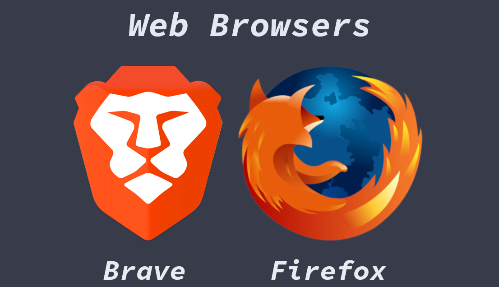

BASIC SOFTWARE
Table of Contents
| HOME |
Hello, from cosmolabs!!! A place where you explore your self!!
On this page we will look at some of the better basic software’s you can use or replace with what you are currently using. My take in choosing a software is:
- the software should be universal, which means it should work on whatever major operating system I am in, like Linux, Windows and Mac.
- the software should be open sourced and free in freedom (you can pay/donate few bucks if you like their work). Most of the proprietary software that is out in the market comes with lot of bloat and a surveillance units to make their share.
- the software should do the work straight and the software should be extensible means, it should comes in handy even when you are becoming pro in the work you are doing with it
Browsers:
In today’s world a web browser is an integral part in everyone’s daily routine. A typical person can survive with a machine that supports a web browser but nothing else. You can do most part of your work in the web version of a specific software and now a days almost every software comes at least with a web client. You should be wise in choosing a browser because it is one of those software that shows world to you and at the same it is one of those software that exposes you to the world via cookies, trackers etc. My favorite picks are Mozilla Firefox and Brave
- Firefox is a free and open source software that exists from ancient and one of the most reliable browsers out there in the forest. It uses the Gecko rendering engine to display the web pages. It has client in almost all of the operating system that available on the planet.
- Brave is a new player in the team that’s gaining popularity in recent days. It uses the blink engine (the engine that powers google chrome (the privacy intruder)). Brave binaries are available for the major operating systems as well as the mobile platforms.
Choosing a search engine is as important as choosing a good web browser. Almost all the people out their in the world uses the google search engine to share all their preferences with google and get bugged by the annoying adds and offers that based on their search result. Some of the better privacy search engines are the duckduckgo and the brave search engine. I can assure you the combination of one of the browsers with one of these search engines make your internet life much better.

Figure 1: Web Browsers!!!
Footer Notes
My channels:
[* Site Under Construction, reuse the data at your own risk]
Last update on : 2021-11-24